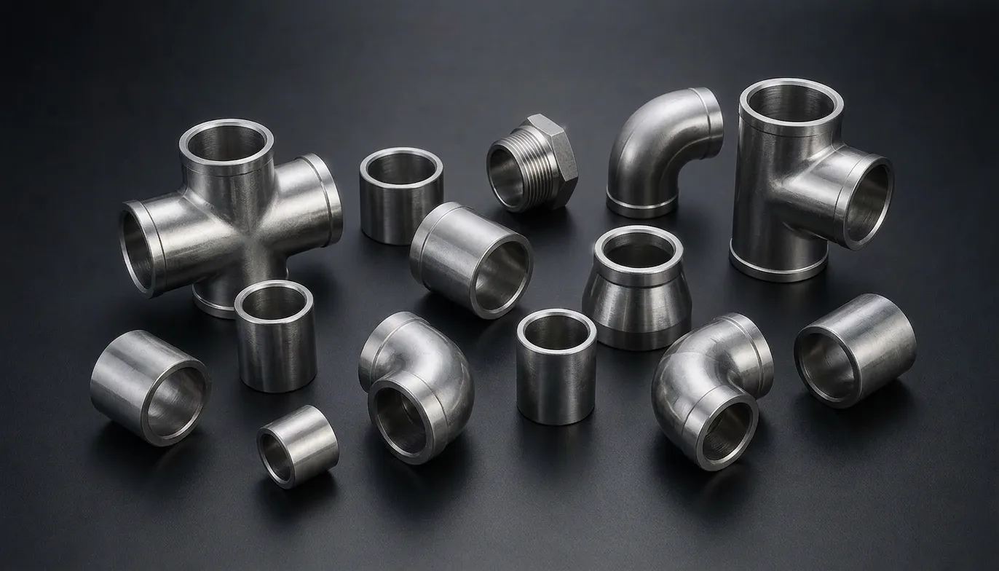

Gururaj Infradesigns is a trusted Stainless Steel 904L Pipe Fittings Manufacturer and Supplier in India, offering ASTM A403 WP904L elbows, tees, reducers, pipe caps, stub ends, and crosses with exceptional resistance to acids, chlorides, and corrosive chemicals for critical industrial piping applications.
Stainless Steel 904L Pipe Fittings are premium-grade piping components designed for highly corrosive environments where conventional stainless steel grades may not provide sufficient resistance. With a high nickel, chromium, molybdenum, and copper content, Grade 904L offers exceptional protection against pitting, crevice corrosion, and acidic media. Gururaj Infradesigns is a trusted Stainless Steel 904L Pipe Fittings Manufacturer in India, supplying high-quality fittings for critical industrial applications.
Our product range includes elbows, tees, reducers, pipe caps, stub ends, and crosses manufactured to meet stringent quality standards and project specifications. These fittings are widely used in chemical processing, fertilizer plants, offshore installations, power generation facilities, and industrial systems handling aggressive process media.

Stainless Steel 904L is a low-carbon, high-alloy austenitic stainless steel grade developed for applications requiring superior corrosion resistance. The alloy is particularly effective in environments containing sulfuric acid, phosphoric acid, chlorides, and other aggressive chemicals where standard stainless steel grades may experience rapid deterioration. As part of the broader range of Stainless Steel Pipe Fittings, Grade 904L is widely selected for critical process systems operating under demanding conditions.
Stainless Steel 904L Pipe Fittings combine excellent corrosion resistance with good mechanical strength and fabrication properties. Their ability to withstand severe chemical exposure helps improve system reliability, reduce maintenance requirements, and extend service life in challenging industrial environments.
| Parameter | Details |
|---|---|
| Material Grade | ASTM A403 WP904L |
| Product Types | Elbow, Tee, Reducer, Pipe Cap, Stub End, Cross |
| Standards | ASTM, ASME, ANSI, MSS SP |
| Size Range | ½" NB to 48" NB |
| Schedule Range | SCH 10 to SCH XXS |
| Manufacturing Process | Seamless & Welded |
| Connection Type | Butt Weld |
| Testing | PMI, Hydro Test, Visual Inspection |
| Certification | EN 10204 3.1 / MTC Available |
Stainless Steel 904L provides excellent resistance to pitting, crevice corrosion, and stress corrosion cracking. This makes it highly suitable for applications involving aggressive chemicals and chloride-containing environments.
The alloy performs exceptionally well in sulfuric acid, phosphoric acid, and various chemical processing environments. Its resistance to acidic attack helps improve equipment longevity and operational reliability.
The high nickel and molybdenum content improves protection against chloride-induced corrosion. This makes Grade 904L a preferred material for offshore and marine-related applications.
Despite its high alloy content, Stainless Steel 904L offers good weldability and fabrication characteristics, making it suitable for complex industrial piping systems.
The combination of superior corrosion resistance and mechanical durability helps reduce maintenance requirements and supports long-term system performance.
| Element | Composition (%) |
|---|---|
| Carbon | Max 0.02 |
| Chromium | 19.0 – 23.0 |
| Nickel | 23.0 – 28.0 |
| Molybdenum | 4.0 – 5.0 |
| Copper | 1.0 – 2.0 |
| Manganese | Max 2.0 |
| Silicon | Max 1.0 |
| Phosphorus | Max 0.045 |
| Sulfur | Max 0.035 |
| Property | Value |
|---|---|
| Tensile Strength | 490 MPa Min |
| Yield Strength | 220 MPa Min |
| Elongation | 35% Min |
| Hardness | 90 HRB Max |
Stainless Steel 904L Pipe Fittings are widely used in chemical processing facilities handling corrosive acids and aggressive process fluids. Their superior corrosion resistance helps ensure safe and reliable operation.
These fittings are commonly installed in fertilizer production plants where exposure to acidic chemicals and corrosive environments requires durable piping components.
The excellent resistance to chloride attack makes Grade 904L suitable for offshore platforms, coastal facilities, and marine process systems operating in harsh environments.
Power plants utilize Stainless Steel 904L Pipe Fittings in systems requiring dependable corrosion resistance and long-term operational performance.
| Grade | Key Characteristics | Typical Applications |
|---|---|---|
| SS 304 | General corrosion resistance | Food Processing, General Industry |
| SS 316 | Enhanced chloride resistance | Marine, Chemical Processing |
| SS 904L | Superior resistance to acids and aggressive chemicals | Chemical Plants, Fertilizer Industries |
| SS 347 | High-temperature stability and weldability | Power Plants, Refineries |
Stainless Steel 904L is specifically developed for highly corrosive environments where superior resistance to acids and chlorides is required. While Stainless Steel 316 Pipe Fittings are widely used for marine and chemical applications, Stainless Steel 347 Pipe Fittings are typically selected for elevated-temperature service. Grade 904L is often preferred when maximum corrosion resistance and long-term reliability are the primary requirements.
| Finish | Benefits |
|---|---|
| Pickled | Removes scale and improves corrosion resistance |
| Passivated | Enhances the protective oxide layer |
| Polished | Improves cleanliness and surface appearance |
| Mill Finish | Suitable for standard industrial applications |
Proper finishing helps improve corrosion performance, surface quality, and long-term durability in demanding industrial environments.
Gururaj Infradesigns supplies Stainless Steel 904L Pipe Fittings in various sizes, schedules, and specifications to support industrial piping requirements. Our products are supplied to EPC contractors, engineering companies, fabricators, and process industries requiring dependable piping components for critical applications.
As a trusted supplier, we focus on providing consistent quality, technical support, and timely deliveries to meet project schedules and operational requirements.
At Gururaj Infradesigns, quality remains an important part of our manufacturing and supply process. All pipe fittings undergo inspection for dimensional accuracy, workmanship, and material compliance before dispatch.
As an ISO Certified Company, we are committed to supplying reliable piping components that meet industrial expectations for quality, consistency, and performance.
Selecting the right pipe fitting grade depends on factors such as chemical exposure, operating temperature, pressure conditions, and service environment. Choosing the appropriate material can significantly improve system reliability, corrosion resistance, and operational efficiency. Our team can assist in selecting the most suitable fitting grade, size, and specification based on your application requirements. We work closely with engineers, fabricators, EPC contractors, and industrial buyers to provide practical guidance and dependable piping solutions for demanding industrial projects.